image หลายบัญชี
ของเราเอง
กลับมาพร้อมใช้ในไม่กี่วินาทีได้อย่างไร?
devtools ไปyolo / cyolo, Playwright และล็อกอินทุกบัญชีหายหมด ต้องวางพรอมต์ตั้งค่าใหม่ แล้วล็อกอินใหม่ทีละบัญชี 😩
ของดีอยู่ในกล่องที่ลบได้
ระบบหลายบัญชีถูกติดตั้ง ใน container ที่กำลังรัน ลบกล่องเมื่อไร ของทั้งหมดหายไปพร้อมกัน
เครื่องใหม่ เพื่อนใหม่ ต้องวางพรอมต์ รอติดตั้ง และล็อกอินใหม่ทุกครั้ง
AI เขียน installer ใหม่ทุกรอบ แต่ละเครื่องจึงได้ของต่างกันเล็กน้อย
คนหนึ่งผ่าน คนหนึ่ง error อีกคนยังติดตั้งไม่เสร็จ เพราะ AI สร้างของใหม่ในทุกเครื่อง
LAB 01 → ส่วนที่ 1 → ส่วนที่ 2
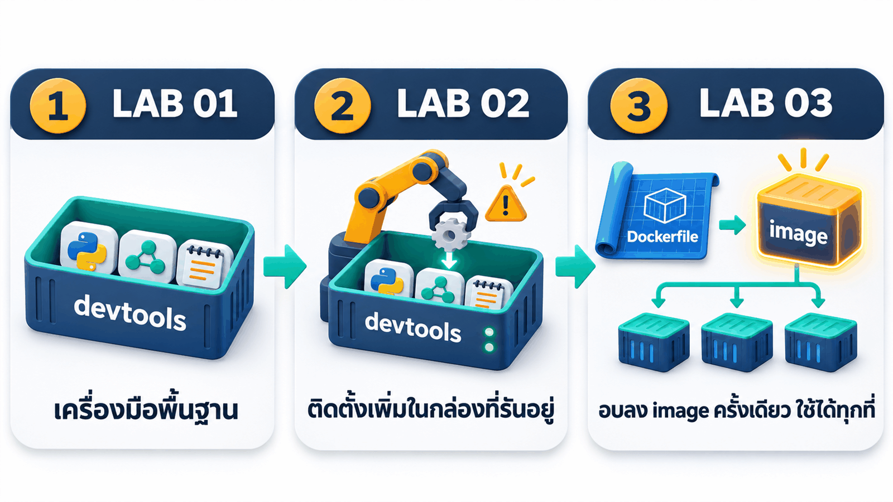
เหมือนเปิดร้านแฟรนไชส์
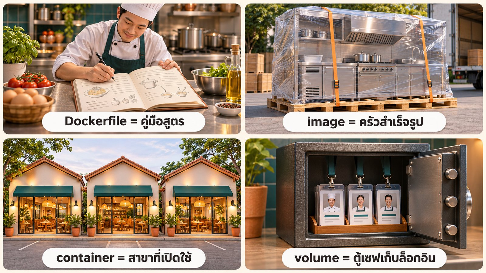
| คำ | ในแลปนี้ |
|---|---|
| Dockerfile คู่มือสูตร | สูตรที่ Claude เขียน |
| image ครัวสำเร็จรูป | my-multi-account:1.0 |
| container สาขาที่เปิดใช้ | my-multi-account ลบแล้วเปิดใหม่ได้ |
| volume ตู้เซฟ | ai-accounts เก็บล็อกอิน |
เขียนสูตรครั้งเดียว ได้ของเหมือนกันทุกครั้ง

โปรแกรมอยู่ใน image · ล็อกอินอยู่ใน volume
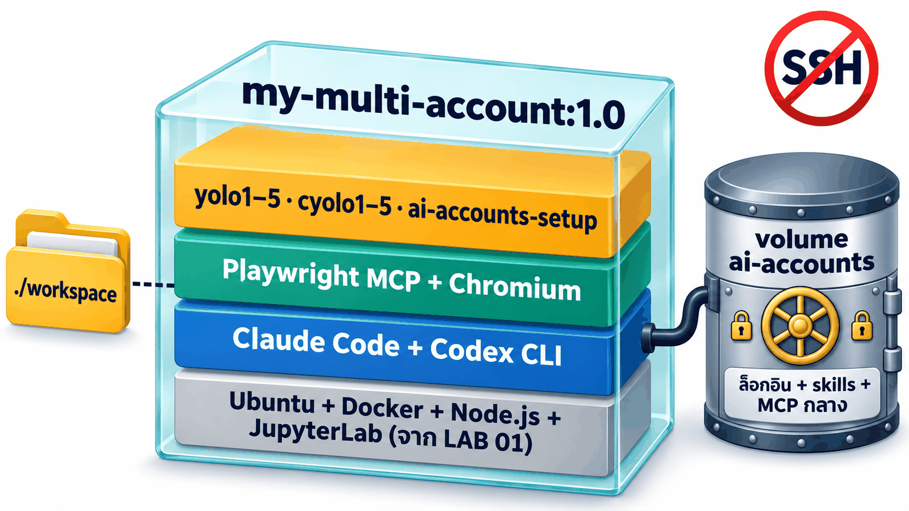
- image = ของที่ทุกคนใช้เหมือนกัน: CLI, Playwright + Chromium, คำสั่ง yolo/cyolo
- volume = ของส่วนตัวที่ต้องอยู่ถาวร: ล็อกอิน, skill และ MCP กลาง
- ./workspace = งานของเรา อยู่บนเครื่อง ไม่หายเมื่อลบ container
ตัด SSH ทิ้ง คุมทุกอย่างผ่าน Claude Code app
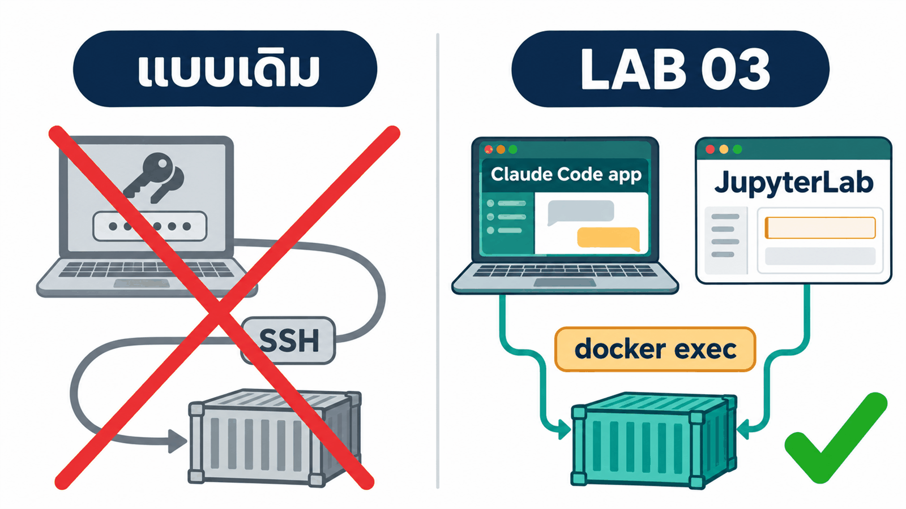
- Claude Code app สั่งงานใน container เองด้วย
docker exec - เราใช้ JupyterLab ในเบราว์เซอร์ตอนล็อกอิน
- ไม่มี
openssh-serverไม่มีพอร์ต 22 ไม่มีรหัสผ่านpasswdหรือ keydevtoolSSH
5 ขั้น สั่งจาก Claude Code app ทั้งหมด

| ขั้น | เวลารันจริง |
|---|---|
| 1 · build image | ~28 นาที |
| 2 · เปิด container | ~1 นาที |
| 3 · ล็อกอิน + ตรวจ | ~15 นาที |
| 4 · ทดสอบพร้อมกัน | ~5 นาที |
| 5 · ลบแล้วสร้างใหม่ | ~3 นาที |
เปิด Claude Code app → Code → New session → เลือกโฟลเดอร์ 03_MultiAccount_Container
วัตถุดิบ 2 อย่างที่ให้ Claude
03_MultiAccount_Container/ ├── 00_Devtool_Container/ ← Dockerfile ของ LAB 01 (ตัด SSH แล้ว) ├── prompt_multi_account.md ← สเปกหลายบัญชี (ชุดเดียวกับส่วนที่ 1) └── _solution/ ← เฉลยจากการรันจริง
Docker Desktop ขึ้น Engine running
Claude Code app ล็อกอินแล้ว
ดิสก์ว่าง ~10 GB (image 4.47 GB + cache)
_solution ออกไปก่อนให้ Claude สร้าง image ของเราเอง
Claude อ่านสเปก คัดลอก Dockerfile ของ LAB 01 เติม 4 ชั้นใหม่ แล้ว docker build -t my-multi-account:1.0 และทดสอบด้วย container ทดสอบ
วางพรอมต์ → Enter → รอผล

ช่วยสร้าง Docker image ของผมเองชื่อ my-multi-account:1.0 ให้เปิดมาแล้วใช้หลายบัญชี AI ได้ทันที ทำบนเครื่องผมในโฟลเดอร์นี้ ใช้คำสั่ง docker ได้ แต่ห้ามลบ หยุด หรือแก้ container / image / volume ที่มีอยู่แล้ว (ห้าม docker system prune และห้ามแตะ volume ai-accounts) วัตถุดิบ - ./00_Devtool_Container = Dockerfile ของ devtools จาก LAB 01 (ไม่มี SSH) คัดลอกเป็น ./MultiAccountDevtool แล้วแก้ในนั้นเท่านั้น ถ้ามี ./MultiAccountDevtool อยู่แล้ว ให้ตรวจเทียบสเปกแล้วแก้เฉพาะที่ขาด - ./prompt_multi_account.md = สเปกระบบหลายบัญชี ทุกข้อต้องเป็นจริงใน image ส่วน "ข้อเท็จจริงจากการทดลอง" ให้ตรวจกับ --help ของเวอร์ชันจริงก่อนใช้ สิ่งที่ต้องอบลงใน image - Claude Code, Codex CLI, Playwright MCP (pin เวอร์ชัน) + Chromium + ฟอนต์ไทย - installer และคำสั่ง yolo1..5 / cyolo1..5 ใน /usr/local/bin พิมพ์ได้ทันทีทั้งใน JupyterLab Terminal และ docker exec - ห้ามมีข้อมูลล็อกอินใน image: /root/ai-accounts เป็น volume และ installer รันทุกครั้งที่ container start โดยไม่ทับของเดิม - ไม่ต้องมี SSH (ผมคุมทุกอย่างผ่าน Claude Code app) คง Docker-in-Docker และ JupyterLab ไว้ build ด้วย: docker build -t my-multi-account:1.0 ./MultiAccountDevtool ทดสอบด้วย container และ volume ทดสอบชื่อใหม่ของตัวเอง แล้วลบทิ้งเมื่อเสร็จ (PASS/FAIL/SKIP ตามจริง) - yolo1..5 / cyolo1..5 --version ครบ 10 คำสั่ง และ config root คนละโฟลเดอร์ - skill shared-check ทุกบัญชีชี้ไปไฟล์เดียวกันใน shared และ cyolo1 mcp list เห็น playwright - Playwright MCP ผ่าน stdio เปิด https://example.com แล้ว screenshot ได้ - installer รอบ 2 ไม่ทับของเดิม และลบ container แล้วสร้างใหม่ ของใน volume ยังอยู่ - JupyterLab /lab ตอบ 200 อะไรที่ต้องล็อกอิน = SKIP ห้ามล็อกอินแทนผม เขียนรายงานตามหัวข้อ "รายงาน" ของสเปกไว้ใน ./MultiAccountDevtool (ห้ามมี secret) เสร็จแล้วสรุปเป็นตารางสั้น ๆ: ผลทดสอบ ขนาด image และเวลา build แล้วหยุด
พรอมต์นี้ฉลาดตรงไหน
🧱 ให้วัตถุดิบชัด
เริ่มจาก Dockerfile ของ LAB 01 + สเปกเดิม Claude ไม่ต้องเดาหน้าตาระบบ
🔒 แยก image กับ volume
โปรแกรมอบลง image ล็อกอินอยู่ใน volume ไม่ติดไปกับ image
🧪 ทดสอบในกล่องทดสอบ
ใช้ container/volume ทดสอบแล้วลบทิ้ง ไม่แตะของจริงบนเครื่อง
✅ รายงาน PASS/FAIL/SKIP
ตรวจผลได้เอง ไม่ต้องเชื่อคำพูดของ AI
9 PASS · 0 FAIL · 1 SKIP · 4.47 GB

- ใช้เวลารวม ~28 นาที (build สุดท้ายแบบไม่ใช้ cache 302 วินาที)
- Claude Code 2.1.319 · Codex 0.167.0 · Playwright MCP 0.0.84
- SKIP = ข้อที่ต้องล็อกอิน ทำในขั้นที่ 3–4
_solution/MultiAccountDevtool/เปิด container จาก image
docker run ครั้งเดียว ทุกอย่างพร้อมทันที เพราะอยู่ใน image แล้ว
เปิด container my-multi-account จาก image my-multi-account:1.0 ที่เพิ่ง build - ถ้ามี container ชื่อนี้อยู่แล้ว ให้ลบแล้วสร้างใหม่ ห้ามลบ volume ai-accounts (เก็บล็อกอินทุกบัญชี) - โฟลเดอร์ ./workspace บนเครื่องผม (สร้างถ้ายังไม่มี) map เป็น /workspace งานจะได้ไม่หายเมื่อลบ container - docker run -dit --name my-multi-account --privileged -p <PORT>:8888 -v ai-accounts:/root/ai-accounts -v <path เต็มของ ./workspace>:/workspace my-multi-account:1.0 PORT เริ่มที่ 8886 ถ้าชนใช้เลขว่างถัดไป - จับเวลาตั้งแต่สั่ง run จน http://localhost:<PORT>/lab ตอบ 200 - ตรวจผ่าน docker exec: yolo1..5 และ cyolo1..5 --version, cyolo1 mcp list, สถานะล็อกอิน (yoloN auth status ดูแค่ loggedIn / cyoloN login status) ห้ามแสดงอีเมลหรือ token สรุปเป็นตาราง พร้อม URL ของ JupyterLab และเวลาที่ใช้

JupyterLab พร้อมใน 1.96 วินาที

- คำสั่งครบ 10 ตัว และ
playwrightenabled ทันที - เครื่องตัวอย่างใช้ volume ที่ล็อกอินไว้แล้ว 5 บัญชี
ตรวจด้วยตาตัวเองใน JupyterLab
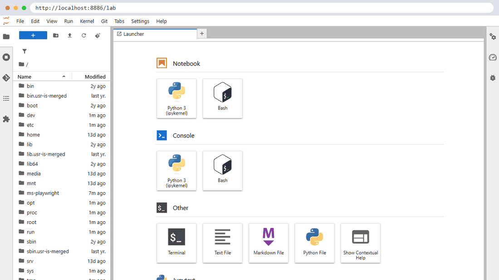
ล็อกอินครั้งเดียว เก็บใน volume
ล็อกอินใน JupyterLab เหมือนส่วนที่ 1 แต่คราวนี้ล็อกอินอยู่ใน volume ai-accounts จึงไม่หายเมื่อลบ container
ล็อกอินเอง อย่างน้อย yolo1, yolo2, cyolo1, cyolo2
| พิมพ์ | เลือก |
|---|---|
yolo1 … yolo5 | Claude account with subscription → ยืนยันในเบราว์เซอร์ → Yes, I trust this folder → /exit |
cyolo1 … cyolo5 | Sign in with ChatGPT หรือ cyoloN login --device-auth |
ภาพเคลื่อนไหวการล็อกอินครบทุกขั้นอยู่ในส่วนที่ 1 · ขั้นที่ 3.1
ช่วยตรวจสถานะล็อกอินทุกบัญชีใน container my-multi-account ทำผ่าน docker exec เท่านั้น ห้ามล็อกอินแทนฉัน ห้ามแก้ไฟล์ใด ๆ - Claude: yolo1 ถึง yolo5 ใช้คำสั่ง yoloN auth status แล้วดูเฉพาะค่า "loggedIn" - Codex: cyolo1 ถึง cyolo5 ใช้คำสั่ง cyoloN login status สรุปเป็นตาราง บัญชี | ล็อกอินแล้ว/ยัง เท่านั้น ห้ามแสดงอีเมล ชื่อองค์กร หรือ token ถ้ามีบัญชีที่ยังไม่ล็อกอิน ให้บอกวิธีล็อกอินใน JupyterLab Terminal (พิมพ์ yoloN แล้วเลือก Claude account with subscription / พิมพ์ cyoloN login --device-auth)
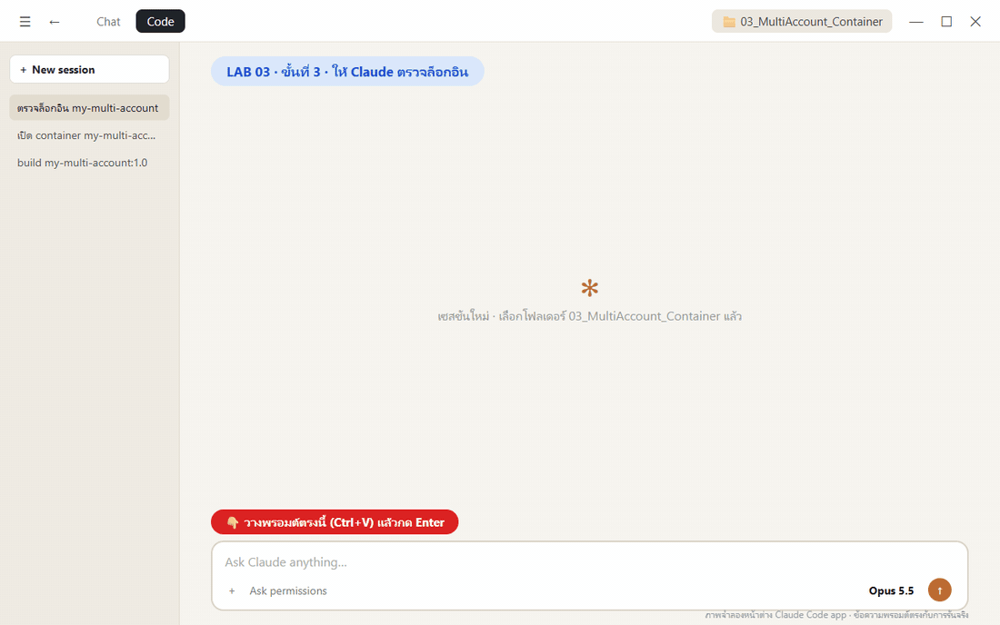
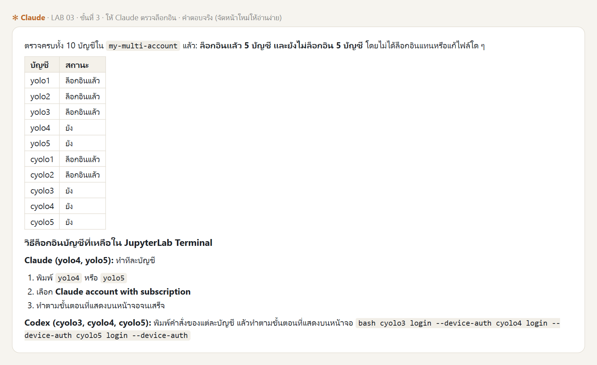
ทดสอบ skill + MCP ข้ามบัญชี — พร้อมกัน
4 บัญชีเปิด Google Flights เองด้วย Playwright MCP พร้อมกัน ค้นหาอย่างเดียว ไม่จอง ไม่ชำระเงิน
ช่วยทดสอบ skill/MCP ส่วนกลางข้ามบัญชีใน container my-multi-account ทำงานใน container ผ่าน docker exec เท่านั้น ห้ามแก้ไฟล์ตั้งค่า ห้ามล็อกอินแทนฉัน 0. ตรวจสถานะล็อกอิน yolo1..5 (yoloN auth status) และ cyolo1..5 (cyoloN login status) แสดงตาราง บัญชี | ล็อกอินแล้ว/ยัง ห้ามแสดงอีเมล องค์กร หรือ token เลือกบัญชีที่ล็อกอินแล้วฝั่งละไม่เกิน 2 บัญชี ถ้าไม่มีบัญชีไหนล็อกอินเลย ให้หยุดและบอกวิธีล็อกอินใน JupyterLab Terminal 1. บันทึกข้อความใต้เส้น ==== ตามตัวอักษรลง /workspace/multi-account/verify-prompt.txt ใน container 2. รันทุกบัญชีที่เลือกพร้อมกันจากโฟลเดอร์ /workspace/multi-account แล้วรอจนครบทุกบัญชี (timeout บัญชีละ 15 นาที): yoloN -p "$(cat verify-prompt.txt)" / cyoloN exec --skip-git-repo-check "$(cat verify-prompt.txt)" 3. คัดลอกภาพที่แต่ละบัญชีรายงานไปเป็น /workspace/multi-account/evidence/<บัญชี>/1-open.png, 2-search.png, 3-results.png พร้อม log คำตอบเป็น run.log ในโฟลเดอร์เดียวกัน 4. สรุปตาราง บัญชี | รหัส shared-check | tool ที่เรียก | เที่ยวบินอันดับ 1 | เวลาที่ใช้ | PASS/FAIL บัญชีต่างกันแต่ CLI เดียวกันต้องได้รหัสเดียวกัน ถ้าบัญชีใดล้มเหลวให้รายงานตามจริง ห้ามแก้แทนหรือเดาผล ==== ตรวจว่า skill และ MCP ส่วนกลางใช้ได้จริงในบัญชีนี้ ทำตามลำดับ ห้ามแก้ไฟล์ตั้งค่าใด ๆ 1. แจ้ง config root ที่ใช้อยู่ (ค่า CLAUDE_CONFIG_DIR หรือ CODEX_HOME) ห้ามแสดง token อีเมล หรือข้อมูลบัญชี 2. ใช้ skill shared-check ตามกลไก skill ของ CLI นี้ แล้วรายงานรหัสที่ได้ พร้อม path ของ skill ตามที่ CLI แสดง ห้ามค้นหาไฟล์เอง (find, grep, ls) และห้ามเปิดไฟล์จาก path ที่ไม่ได้มาจากรายการ skill ของ CLI 3. ใช้เครื่องมือของ MCP ชื่อ playwright เท่านั้น ห้ามใช้ curl, python, web search หรือ browser อื่น เปิด https://www.google.com/travel/flights?hl=en ค้นหาเที่ยวบินเที่ยวเดียว Bangkok (BKK) ไป Tokyo ญี่ปุ่น ชั้นประหยัด ผู้ใหญ่ 1 คน วันเดินทางคือวันที่ 15 ของเดือนถัดไป ค้นหาอย่างเดียว ห้ามกดจอง ห้ามกรอกข้อมูลส่วนตัว ห้ามชำระเงิน ห้ามล็อกอินเว็บไซต์ใด ถ้าหน้าเว็บไม่แสดงผล ให้รายงานตามจริงว่าติดตรงไหน ห้ามเดาราคา 4. บันทึกภาพหน้าจอด้วย tool screenshot ของ playwright เฉพาะส่วนที่มองเห็น 3 ภาพ ตั้งชื่อ <บัญชี>-1-open.png (หน้าเว็บเปิดได้), <บัญชี>-2-search.png (กรอกเงื่อนไขครบก่อนกดค้นหา), <บัญชี>-3-results.png (รายการผลเที่ยวบิน) แล้วรายงาน path เต็มของแต่ละภาพ 5. สรุปเป็นตาราง รายการ | PASS/FAIL | หลักฐาน โดยมีแถว: config root, รหัสจาก skill shared-check, ชื่อ MCP server และชื่อ tool ที่เรียกจริง, ภาพหน้าจอ 3 ภาพ (path), เที่ยวบิน 3 อันดับแรก: สายการบิน เวลาออก-ถึง ระยะเวลา จำนวนแวะ ราคา (ตามที่เห็นบนหน้าเว็บ)
Claude สั่ง 4 บัญชีให้ทำงานพร้อมกัน
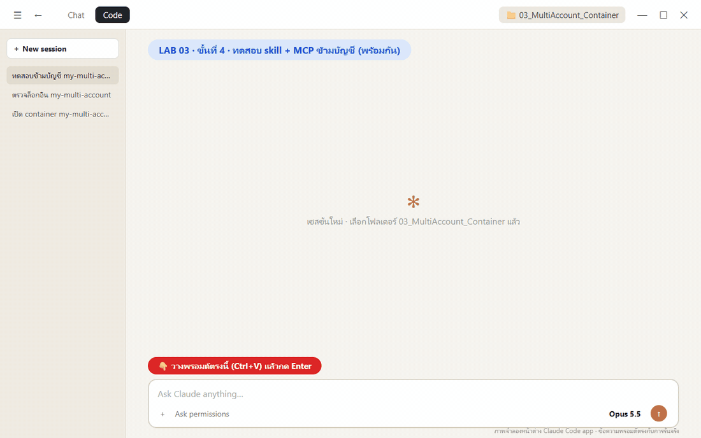
4/4 PASS ใน 5 นาที 20 วินาที
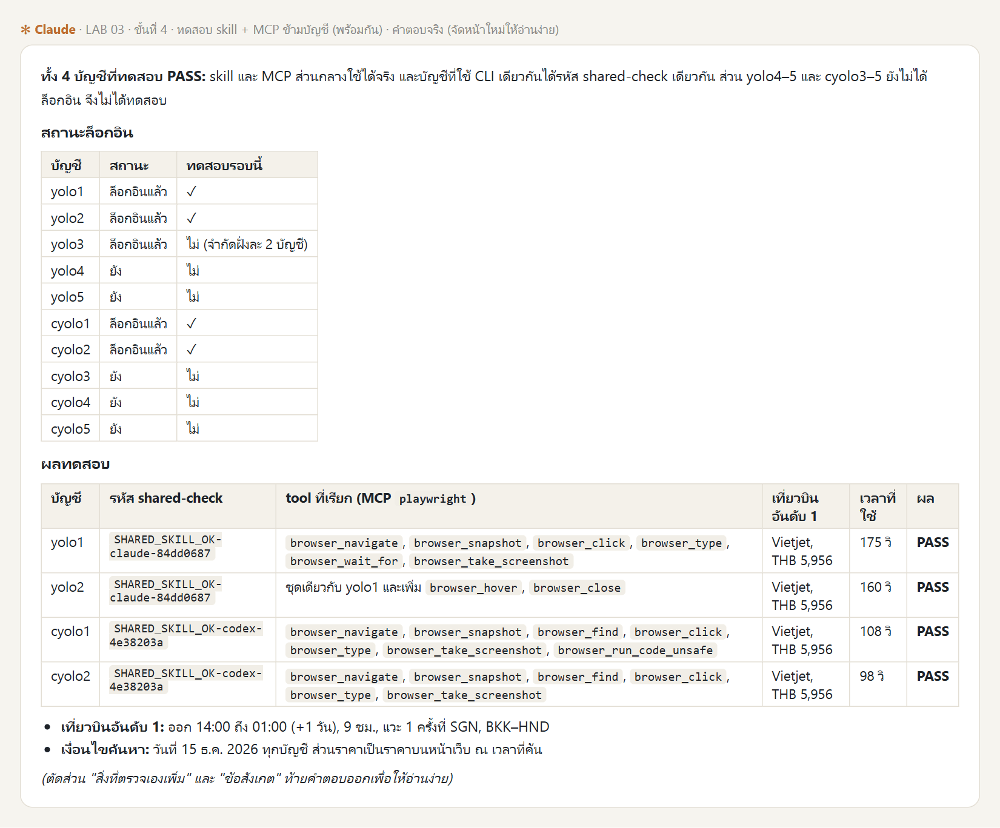
| บัญชี | รหัส | เวลา |
|---|---|---|
| yolo1 | …claude-84dd0687 | 175 วิ |
| yolo2 | เหมือน yolo1 | 160 วิ |
| cyolo1 | …codex-4e38203a | 108 วิ |
| cyolo2 | เหมือน cyolo1 | 98 วิ |
AI เปิดเว็บ กรอก และค้นหาเอง
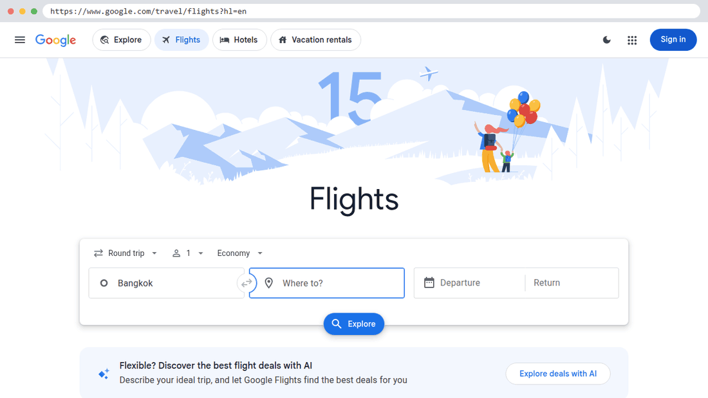
Claude และ Codex ใช้ MCP กลางตัวเดียวกันได้
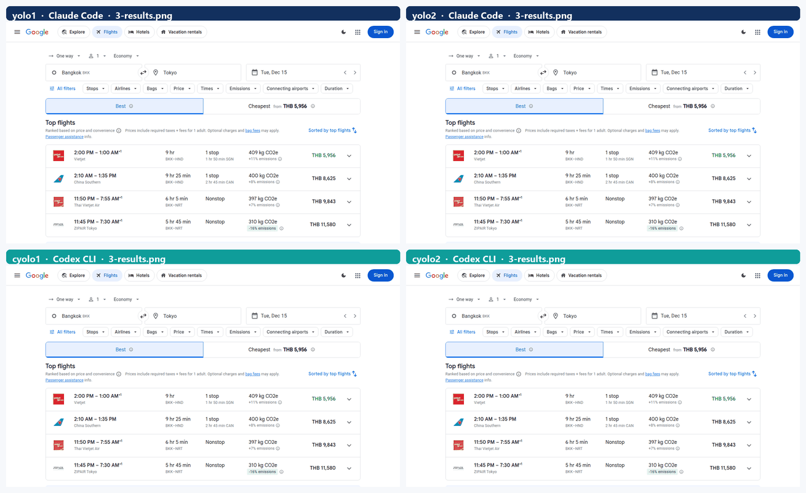
พิสูจน์: ลบ container แล้วสร้างใหม่
นี่คือเหตุผลที่เราทำแลปนี้ ลบกล่องทิ้ง แล้วดูว่าต้องรอนานแค่ไหนกว่าจะกลับมาใช้ได้
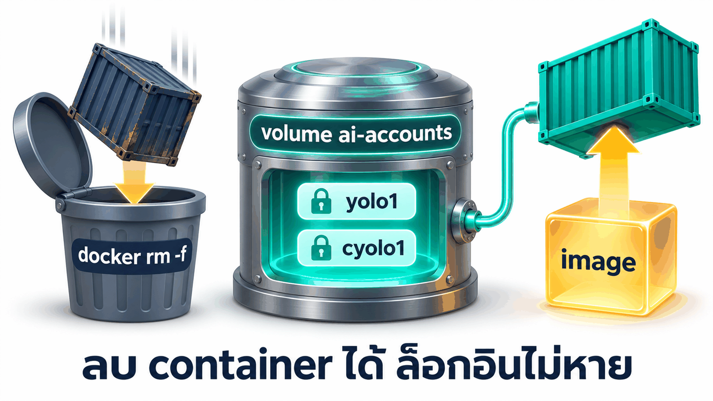
พิสูจน์ว่าทุกอย่างถูกอบไว้ใน image แล้ว ด้วยการลบ container my-multi-account แล้วสร้างใหม่ - ก่อนลบ: บันทึกสถานะล็อกอินทุกบัญชี (ห้ามแสดงอีเมลหรือ token) - ลบด้วย docker rm -f แล้วรัน docker run คำสั่งเดิม (port เดิม volume ai-accounts เดิม ./workspace เดิม) ห้ามลบ volume ห้ามติดตั้งอะไรเพิ่ม จับเวลาตั้งแต่ลบจน JupyterLab ตอบ 200 - หลังสร้างใหม่ ตรวจผ่าน docker exec: yolo1..5 และ cyolo1..5 --version, cyolo1 mcp list เห็น playwright, skill shared-check ยังอยู่, สถานะล็อกอินเทียบกับก่อนลบ, ไฟล์ใน /workspace/multi-account/evidence ยังอยู่ - ให้บัญชีแรกที่ล็อกอินแล้วของแต่ละฝั่งตอบสั้น ๆ ว่า "พร้อม" (yoloN -p / cyoloN exec --skip-git-repo-check) เพื่อยืนยันว่าใช้งานได้จริงทันที สรุปเป็นตาราง ก่อนลบ | หลังสร้างใหม่ และเวลาที่ใช้
3.27 วินาที · ทุกอย่างเหมือนเดิม
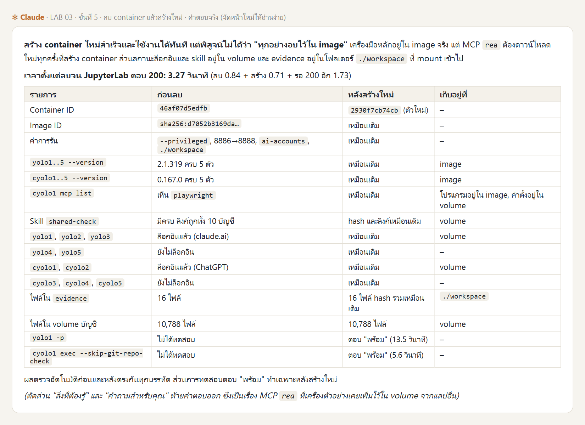
- ล็อกอิน 5 บัญชี skill และ evidence เหมือนก่อนลบทุกบรรทัด
yolo1/cyolo1ตอบ "พร้อม" ได้ทันที (13.5 / 5.6 วินาที)
MCP rea ในคำตอบมาจากแลปอื่นใน volume ของเครื่องตัวอย่าง
~20 นาที → 3.27 วินาที
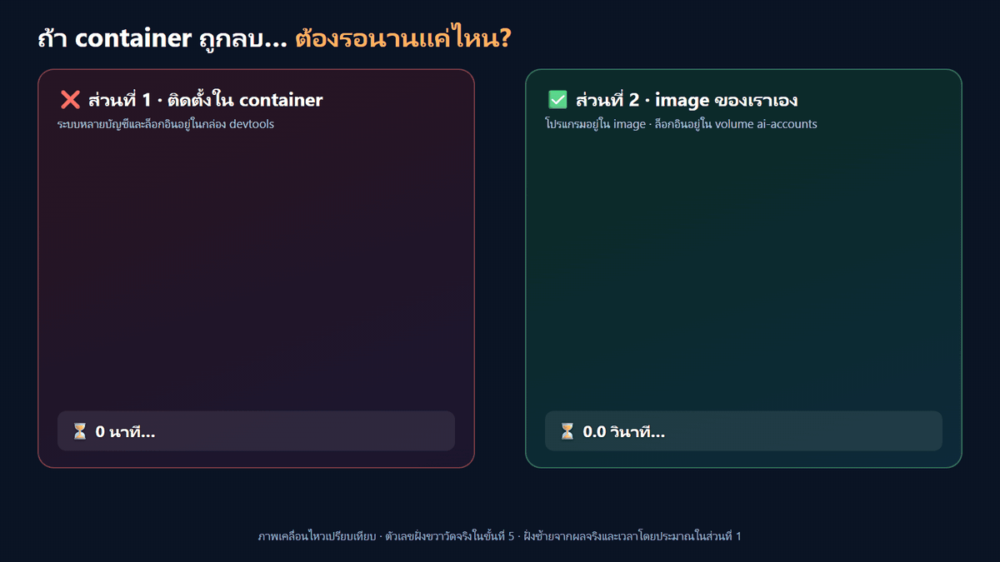
ส่วนที่ 1 vs ส่วนที่ 2
| ส่วนที่ 1 · ติดตั้งใน container | ส่วนที่ 2 · image ของเราเอง | |
|---|---|---|
| ระบบหลายบัญชี | ใน container devtools | ใน image my-multi-account:1.0 |
| ล็อกอิน | ใน container (หายเมื่อลบ) | ใน volume ai-accounts (ไม่หาย) |
| ลบ container แล้ว | ตั้งค่าใหม่ + ล็อกอินใหม่ (~20 นาที) | docker run ใหม่ พร้อมใน 3.27 วินาที |
| เครื่องใหม่ / เพื่อน | ทำซ้ำทุกเครื่อง ผลอาจต่างกัน | Dockerfile เดียวกัน ได้ของชุดเดียวกัน |
| เข้าไปทำงาน | SSH หรือ JupyterLab | Claude Code app + JupyterLab (ไม่มี SSH) |
ปลอดภัยไว้ก่อน
🗄️ อย่าลบ volume
docker rm -f ปลอดภัย แต่ docker volume rm ai-accounts หรือ prune --volumes = ล็อกอินหายทุกบัญชี
🔓 JupyterLab ไม่มีรหัสผ่าน
ใช้ -p 127.0.0.1:8886:8888 หรือตั้ง JUPYTER_PASSWORD ถ้าไม่อยากให้เครื่องอื่นในเครือข่ายเข้าได้
📦 image ห้ามมีล็อกอิน
ก่อน push ให้ทีม ตรวจว่าไม่มี credential ติดไป (Claude ตรวจไว้แล้วในขั้นที่ 1)
👤 แยกระดับโฟลเดอร์
ทุกบัญชีเป็น root คนเดียวกัน ไม่ใช่ OS isolation
ทำครบหรือยัง?
เขียนสูตรครั้งเดียว
ใช้ได้ทุกครั้ง
container จึงลบได้ไม่ต้องกลัว
รายละเอียดทุกขั้นตอนและพรอมต์เต็มอยู่ใน README.md